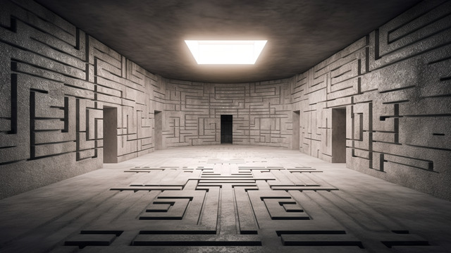
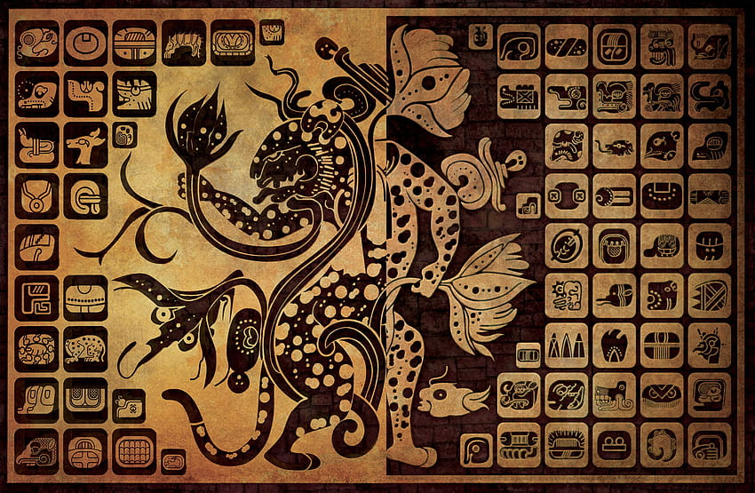

.
.
. 
Você acorda em um labirinto escuro, sem lembrança de como chegou até aqui. As paredes são altas e cobertas de musgo, e você pode ouvir o eco distante de água pingando. Uma única lanterna fraca ilumina seu caminho.
Qual é o seu primeiro passo?A diante voçe nota uma sala, indo mais em frente você entra na sala, há uma chave.
Já adiantando, o que você pode fazer ¯\_(ツ)_/¯.Ao seguir pela direita, você se depara com cifras enigmáticas que instigam sua curiosidade. No entanto, essas mensagens não são meros símbolos; elas carregam um aviso claro e urgente. Ignorá-las não é uma opção, pois a necesario compreendelas para poder avançar.
..  . .M̸͖͕̟͆͋̓ë̸͔͚̞́̈́͆n̸̞̐̀͜͜͠s̴̘̻͉͊͋͠a̵̻͖̟͊̓̚g̸̻̫̻͑͊͝e̴̠͕̠͑͑͝m̸͇͕͇͆̀̿ s̸̻̪͒̿͝e̵̢̡̪͌͛̚c̸̙͇͇̕͠͠r̸̼͖̙͒̚̚ë̴̘̝̘́͐͝ẗ̵̞͉͙́̒͆a̵͇͙͉̓͊̔
.
As cifras imdicam que >< ₒꓭꟽᵢ⅂ ₒ∀ ₒᗡₙƎϽƎᗡ ꟽƎ⅁∀ₛₛ∀Ԁ ∀ ꓤ∀ꓤꓕₙₒϽₙƎ ꓤƎᗡՈԀ Ǝₛ ∀ᗡ∀ₙꓤₒᒋ ∀ꓕₛƎₙ ꓤᵢՈ⅁ƎₛₛₒꓤԀ ⅂ƎɅᵢₛₛₒԀ Ǝ̗ ₛ∀ₙƎԀ∀.
.
Fim?¯\_(ツ)_/¯
Tente de novo/final muito simples pois ja n tinha muito tempo pra poder terminar ao menos tene achar a mensagem secreta a direita Falto mais conteudo, os caras do alura n estao aptos para ensinar